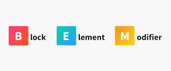

<section class="about-steps">
    <div class="container">
        <h2 class="about-steps__title title title_line title_fz48">Шаги вёрстки</h2>
        <div class="swiper swiperSteps1">
            <div class="about-steps__wrapper swiper-wrapper">
                <div class="about-steps__slide swiper-slide">
                    
                    <h3 class="about-steps__slide-title title title_fz18">Методология БЭМ</h3>
                    <p class="about-steps__slide-descr title title_fz16">Позволяет легко и быстро разрабатывать
                        интерфейсы любой
                        сложности и повторно использовать существующий код, избегая переиспользования кода</p>
                </div>
                <div class="about-steps__slide swiper-slide">Slide 2</div>
                <div class="about-steps__slide swiper-slide">Slide 3</div>
                <div class="about-steps__slide swiper-slide">Slide 4</div>
                <div class="about-steps__slide swiper-slide">Slide 5</div>
                <div class="about-steps__slide swiper-slide">Slide 6</div>
                <div class="about-steps__slide swiper-slide">Slide 7</div>
                <div class="about-steps__slide swiper-slide">Slide 8</div>
                <div class="about-steps__slide swiper-slide">Slide 9</div>
            </div>
        </div>
    </div>
</section>